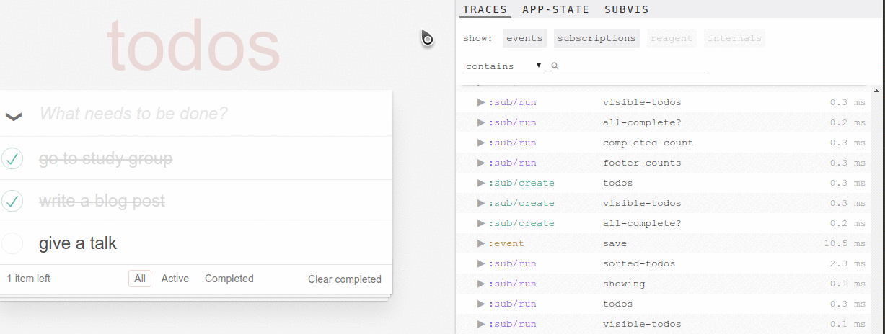

DevTools for re-frame
This summer, we worked on a project that was focused on improving the developer experience with re-frame. We want to give an overview of the tool and summarize our contributions in the following post.
The Joy of Debugging
How often do you print something to the console? I do it quite often. My application does not work as expected and I need to go into various places in the code to figure out what is causing the problem. Some piece of data has an incorrect value, but which one is it? Debugging is hard, but luckily, we can build tools to make it easier. The key is to present the application data in a clear and browsable form. We want coding to be more enjoyable so that we spend less time on fixing bugs and more on building things.
Our Summer
Thanks to getting a grant from RGSoC, we had the opportunity to work on a dev tool for re-frame, called re-frame-trace. It was a great way of learning ClojureScript while working on a project that we will be using for future projects ourselves. As we were new to re-frame, we talked to a couple of people who had used it before so that we could get a better understanding of the user needs.
What is re-frame?
re-frame is a ClojureScript framework for building single-page applications with Reagent. If you’re from the JavaScript world, you can see that re-frame has a similar spirit to Redux. It manages the data flow through your application and enables a clear separation of concerns. Especially when working with large application state, re-frame adds a lot of value to the developer experience.
What is re-frame trace?
Inspired by redux-devtools, re-frame trace is a tracing panel developed for debugging re-frame applications. When enabled for development, it is being injected into the DOM of the main application and displays data for dispatched events, subscriptions, reagent renderings and re-frame internals. Each trace has some metadata and a performance value in milliseconds.
What did we achieve?
When we started, the basic architecture and data already existed. The challenge lied in finding a clean and easily understandable way of presenting the data. The tool generated a lot of traces which quickly felt overwhelming as a new user. We wanted to make the tool adaptable to the developer’s needs. The image below gives a first impression of the changes we made.

So what are our major contributions?
- Filter Improvements: The developer has multiple options to filter for the information he needs to focus on. He can search for traces containing one or more specific keywords. In cases when performance is important, it is possible to add a filter that show traces that took longer than a specific number of milliseconds. Four general trace categories help to reduce the amount of traces that are being displayed depending on the use case.
- App-State Visualization: Using the formatting that cljs-devtools provides, we were able to add a new tab to the tracing window that displays the current values in the app state.
- Usability Improvements: The tracing window can be smoothly adapted in width and details can be expanded and collapsed for individual traces or for all at once. In a nutshell, we were able to present the traces in a clean and extendable way so that the developer is not overloaded with too much information at once.
- Documentation: We wrote documentation for how to set up the tracing tool for re-frame projects and added a section to help developers set up the project for development.
What can you do with re-frame trace?
We put together three exemplary scenarios for which re-frame trace can be used.
Scenario 1: I want to see all events including dispatch values that have been triggered.
(click here to enlarge gif)

Scenario 2: I only want to see events for checking todos that took longer than 5 milliseconds.
(click here to enlarge gif)

Scenario 3: I want to inspect the current values of the app-state.
(click here to enlarge gif)

Future ideas
During our project, we coordinated with Daniel Compton and Mike Thompson to understand the vision for the tracing tool more clearly. The idea is to see re-frame trace as a dashboard that can be adapted to the needs of individual developers giving more insight into their re-frame applications.
Try out re-frame-trace!
Tell us about your developer experience on the Clojurians Slack channel where you can find us as daiyi and saskia or open a github issue for bugs and ideas!

{kind=link}
{kind=link}
{kind=link}